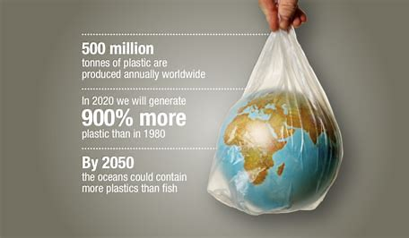

Welcome to Your Plastic Consumption Tracker
Our mission is to help you monitor and reduce plastic waste. Use the calculator to measure your weekly usage, discover recycling tips, and view insights about your consumption.
 Start Tracking NowGlobal Plastic Consumption
Current total in tons:
0
Global Plastic Recycling
Current total recycled in tons:
0